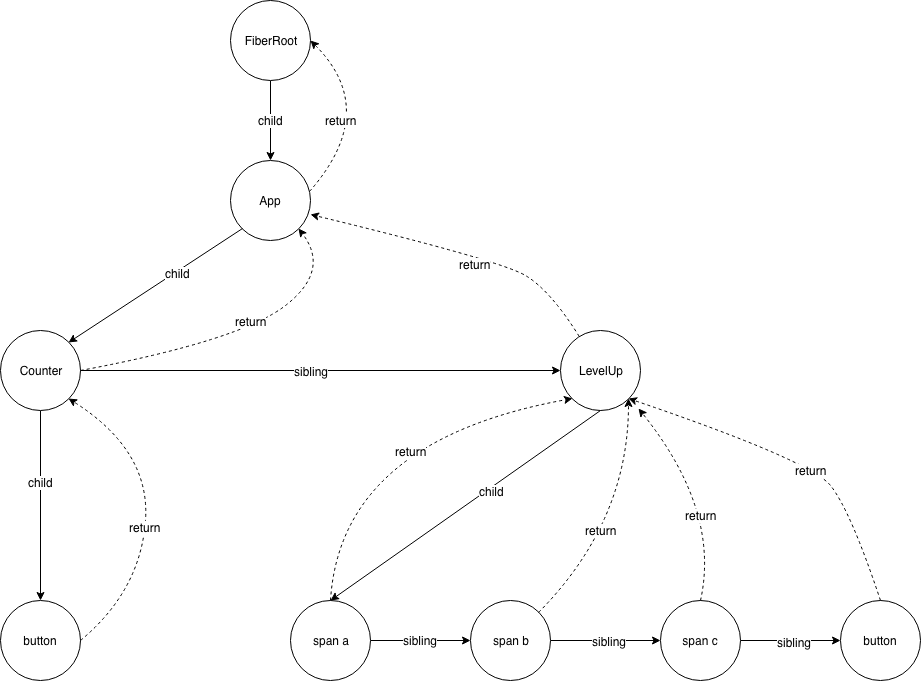

# React 源码解读（二） Fiber Root
在react 16之前，组件渲染是不能被打断的，这就导致当项目非常大的时候，只能等待渲染完才能做其他事。 而在 16 之后，React.render 新增了 fiber 机制。 可以在更新过程中中断任务来执行优先级更高的任务。
fiber 分为两个阶段
- reconciliation 阶段 fiberNode为单位，调度的时候，每更新一个fiber，返回去询问，是否有优先级更高的任务，接下来的任务会中断，不会实际渲染到页面，update，打上 effectTag
- commit 阶段 处理这些标记，渲染到页面，这个过程是不能被打断的
它的流程具体是怎么样的? 优先级更高的任务，如何判断优先级?
# 创建 FiberRoot
顺着流程走，代码会在 ReactDOM.render 中执行 在源码中可以看到依次执行了以下几个方法
- legacyRenderSubtreeIntoContainer
- legacyCreateRootFromDOMContainer
- ReactRoot
- 进入 react-reconciler 库
- 具体通过 createContainer -> createFiberRoot 创建 fiberRoot。
legacyRenderSubtreeIntoContainer
function legacyRenderSubtreeIntoContainer(
parentComponent: ?React$Component<any, any>,
children: ReactNodeList,
container: DOMContainer,
forceHydrate: boolean, // forceHydrate 的作用是是否需要复用节点，在服务端渲染中它会被设为true
callback: ?Function,
) {
let root: Root = (container._reactRootContainer: any);
// 第一次root 不存在
if (!root) {
// Initial mount
// 创建reactRoot，在dom元素上挂载,
root = container._reactRootContainer = legacyCreateRootFromDOMContainer(
container,
forceHydrate,
);
}
// Initial mount should not be batched.
// 首次不用批量更新， batchedUpdate是等view更新完之后在去统一更新状态，
// 有一个等待的过程， 第一次不需要，可以更快
unbatchedUpdates(() => {
if (parentComponent != null) {
root.legacy_renderSubtreeIntoContainer(
parentComponent,
children,
callback,
);
} else {
// ReactRoot.prototype.render
root.render(children, callback);
}
});
// 省略代码
}
2
3
4
5
6
7
8
9
10
11
12
13
14
15
16
17
18
19
20
21
22
23
24
25
26
27
28
29
30
31
32
33
34
35
在 legacyRenderSubtreeIntoContainer 方法中，第一次root 不存在时，创建了reactRoot 在dom元素上挂载 forceHydrate 参数被传入到了 legacyCreateRootFromDOMContainer中
legacyCreateRootFromDOMContainer
function legacyCreateRootFromDOMContainer(
container: DOMContainer,
forceHydrate: boolean,
): Root {
// 是否需要复用节点
const shouldHydrate =
forceHydrate || shouldHydrateDueToLegacyHeuristic(container);
// First clear any existing content.
if (!shouldHydrate) {
let warned = false;
let rootSibling;
// 删除子节点
while ((rootSibling = container.lastChild)) {
container.removeChild(rootSibling);
}
}
// Legacy roots are not async by default.
const isConcurrent = false;
// 返回一个新创建的ReactRoot
return new ReactRoot(container, isConcurrent, shouldHydrate);
}
2
3
4
5
6
7
8
9
10
11
12
13
14
15
16
17
18
19
20
21
ReactRoot 通过 createContainer 创建了 FiberRoot ReactRoot
function ReactRoot(
container: DOMContainer,
isConcurrent: boolean,
hydrate: boolean,
) {
// 创建FiberRoot
const root = createContainer(container, isConcurrent, hydrate);
// 把创建的节点绑在_internalRoot属性上
this._internalRoot = root;
}
2
3
4
5
6
7
8
9
10
创建fiber tree 的过程

这里我们再来捋一下
ReactDOM.render 通过 legacyCreateRootFromDOMContainer 创建了 ReactRoot
ReactRoot 又创建了 FiberRoot
FiberRoot 又有如下几个比较重要的属性
- current
- containerInfo
- finishedWork 在reconciliation 阶段，把一个update 推到 finishedWork，在 commit 阶段处理它
- expirationTime
# expirationTime
ReactRoot.prototype.render => updateContainer() => ExpirationTime render 的过程中调用了 updateContainer，和前面 createContainer 相对应，进行更新操作，而 updateContainer 返回的是个 ExpirationTime
updateContainer
// updateContainer为啥返回一个ExpirationTime？
export function updateContainer(
element: ReactNodeList,
container: OpaqueRoot,
parentComponent: ?React$Component<any, any>,
callback: ?Function,
): ExpirationTime {
const current = container.current;
// 通过 msToExpirationTime 得到currentTime
const currentTime = requestCurrentTime();
// 根据给任务分优先级，来得到不同的过期时间
const expirationTime = computeExpirationForFiber(currentTime, current);
return updateContainerAtExpirationTime(
element,
container,
parentComponent,
expirationTime,
callback,
);
}
2
3
4
5
6
7
8
9
10
11
12
13
14
15
16
17
18
19
20
21
在返回之前先获取了 expirationTime 那就先看看 expirationTime 是什么 computeExpirationForFiber => 计算不同的过期时间 找到 computeExpirationForFiber 方法
这里有一个设置优先级的操作，也就是 getCurrentPriorityLevel，这里最后又调到了 Scheduler.js 的东西，也是 Scheduler 中最重要的部分
通过设置了5个等级的优先级，分别对应着超时时间，优先级越高，ExpirationTime 超时时间越低
Scheduler.js
// TODO: Use symbols?
var ImmediatePriority = 1;
var UserBlockingPriority = 2;
var NormalPriority = 3;
var LowPriority = 4;
var IdlePriority = 5;
// Max 31 bit integer. The max integer size in V8 for 32-bit systems.
// Math.pow(2, 30) - 1
// 0b111111111111111111111111111111
var maxSigned31BitInt = 1073741823;
// Times out immediately, 比0还小，立即执行
var IMMEDIATE_PRIORITY_TIMEOUT = -1;
// Eventually times out
var USER_BLOCKING_PRIORITY = 250;
var NORMAL_PRIORITY_TIMEOUT = 5000;
var LOW_PRIORITY_TIMEOUT = 10000;
// Never times out
var IDLE_PRIORITY = maxSigned31BitInt;
2
3
4
5
6
7
8
9
10
11
12
13
14
15
16
17
18
19
20
下面是 computeExpirationForFiber 方法，用来计算不同的过期时间
computeExpirationForFiber
// 计算不同的过期时间
function computeExpirationForFiber(currentTime: ExpirationTime, fiber: Fiber) {
// var ImmediatePriority = 1; 最高优先级， 直接走messageChannel 直接处理
// var UserBlockingPriority = 2;
// var NormalPriority = 3; 默认
// var LowPriority = 4;
// var IdlePriority = 5;
// 优先级越高，ExpirationTime 超时时间越低
const priorityLevel = getCurrentPriorityLevel();
let expirationTime;
if ((fiber.mode & ConcurrentMode) === NoContext) {
// Outside of concurrent mode, updates are always synchronous.
// 在并发模式之外，更新始终是同步的。
expirationTime = Sync;
// isWorking 在renderRoot或者CommitRoot
// isCommitting CommitRoot
} else if (isWorking && !isCommitting) {
// isWorking 在 commitRoot 和 renderRoot 时被设置为true
// isCommitting 在 commitRoot 时被设置为true
// 所以在render阶段，优先级 expirationTime 设置为下次渲染的到期时间
// During render phase, updates expire during as the current render.
expirationTime = nextRenderExpirationTime;
} else {
// 在commit阶段，根据priorityLevel进行expirationTime更新
switch (priorityLevel) {
case ImmediatePriority:
// 立即执行
expirationTime = Sync;
break;
case UserBlockingPriority:
// 因用户交互阻塞的优先级
expirationTime = computeInteractiveExpiration(currentTime);
break;
case NormalPriority:
// 一般，默认优先级， 异步执行
// This is a normal, concurrent update
expirationTime = computeAsyncExpiration(currentTime);
break;
case LowPriority:
case IdlePriority:
// 低优先级或空闲状态
expirationTime = Never;
break;
default:
invariant(
false,
'Unknown priority level. This error is likely caused by a bug in ' +
'React. Please file an issue.',
);
}
// If we're in the middle of rendering a tree, do not update at the same
// expiration time that is already rendering.
// 下一个fiber存在，且当前的fiber的过期时间和下一个fiber的过期时间一致
// 把当前的fiber的过期时间减1
// 避免在渲染树的时候同时去更新已经渲染的树
if (nextRoot !== null && expirationTime === nextRenderExpirationTime) {
expirationTime -= 1;
}
}
// Keep track of the lowest pending interactive expiration time. This
// allows us to synchronously flush all interactive updates
// when needed.
// TODO: Move this to renderer?
// 记录下挂起的用户交互任务中expirationTime最短的一个，在需要时同步刷新所有交互式更新
if (
priorityLevel === UserBlockingPriority &&
(lowestPriorityPendingInteractiveExpirationTime === NoWork ||
expirationTime < lowestPriorityPendingInteractiveExpirationTime)
) {
lowestPriorityPendingInteractiveExpirationTime = expirationTime;
}
return expirationTime;
}
2
3
4
5
6
7
8
9
10
11
12
13
14
15
16
17
18
19
20
21
22
23
24
25
26
27
28
29
30
31
32
33
34
35
36
37
38
39
40
41
42
43
44
45
46
47
48
49
50
51
52
53
54
55
56
57
58
59
60
61
62
63
64
65
66
67
68
69
70
71
72
73
74
75
76
77
这里 expirationTime 的计算有点东西。使用和 0 取余来进行取整。 在一定范围内的时间都会视为相同的。
(100 / 10) | 0 // 10
(103 / 10) | 0 // 10
(110 / 10) | 0 // 11
2
3
ReactFiberExpirationTime.js
const UNIT_SIZE = 10;
const MAGIC_NUMBER_OFFSET = MAX_SIGNED_31_BIT_INT - 1; // 到期时间偏移量
// 1 unit of expiration time represents 10ms.
export function msToExpirationTime(ms: number): ExpirationTime {
// Always add an offset so that we don't clash with the magic number for NoWork.
return MAGIC_NUMBER_OFFSET - ((ms / UNIT_SIZE) | 0);
}
export function expirationTimeToMs(expirationTime: ExpirationTime): number {
return (MAGIC_NUMBER_OFFSET - expirationTime) * UNIT_SIZE;
}
// 向上取整，间隔在precision内的两个num最终得到的相同的值 如：(60, 25) (74, 25)
function ceiling(num: number, precision: number): number {
return (((num / precision) | 0) + 1) * precision;
}
2
3
4
5
6
7
8
9
10
11
12
13
14
15
16
17
下面再回到 updateContainer 方法（调来调去的有点乱）, 最后 return 了 updateContainerAtExpirationTime，updateContainerAtExpirationTime 又返回了 scheduleRootUpdate
updateContainer() => updateContainerAtExpirationTime() => scheduleRootUpdate()
scheduleRootUpdate
function scheduleRootUpdate(
current: Fiber,
element: ReactNodeList,
expirationTime: ExpirationTime,
callback: ?Function,
) {
// 新建一个update createUpdate() 下面是它的返回值 可以理解为一个更新单元
// expirationTime: expirationTime,
// tag: UpdateState,
// payload: null,
// callback: null,
// next: null,
// nextEffect: null,
const update = createUpdate(expirationTime);
// Caution: React DevTools currently depends on this property
// being called "element".
update.payload = {element};
callback = callback === undefined ? null : callback;
if (callback !== null) {
warningWithoutStack(
typeof callback === 'function',
'render(...): Expected the last optional `callback` argument to be a ' +
'function. Instead received: %s.',
callback,
);
update.callback = callback;
}
// 调用schedule的回调
flushPassiveEffects();
// 延迟创建update quenes, 并把update 更新到update quenes中
// update 添加到 current.updateQuene.firstUpdate|lastUpdate
enqueueUpdate(current, update);
scheduleWork(current, expirationTime);
return expirationTime;
}
2
3
4
5
6
7
8
9
10
11
12
13
14
15
16
17
18
19
20
21
22
23
24
25
26
27
28
29
30
31
32
33
34
35
36
37
38
# scheduleWork
scheduleWork
function scheduleWork
(fiber: Fiber, expirationTime: ExpirationTime) {
// 设置expirationTime & 返回root节点的Fiber对象
const root = scheduleWorkToRoot(fiber, expirationTime);
if (root === null) {
return;
}
// isWorking 在render和commit两个阶段都会为true
// 新的render过期时间不是noWork
// 之前的过期时间大于现在新的过期时间
// 表达的含义：当前没有任务在执行，之前执行过任务，同时当前的任务比之前执行的任务过期时间要小
if (
!isWorking &&
// nextRenderExpirationTime 在初始的时候是noWork， 被设置后不再是noWork
nextRenderExpirationTime !== NoWork &&
// ExpirationTime时间越小， 优先级更高
expirationTime > nextRenderExpirationTime
) {
// This is an interruption. (Used for performance tracking.)
// 中断了执行 ， 因为有优先级更高的任务进来了
// isWorking=false意味着，在上一个时间片执行完之后进这个判断，
// 有更高优先级的任务，则中断了之前任务的执行
interruptedBy = fiber;
// 清空之前任务的的stack
resetStack();
}
// 更新最近和最早的时间
markPendingPriorityLevel(root, expirationTime);
// 要么没有任何任务 要么有任务但处于commitRoot阶段
if (
// If we're in the render phase, we don't need to schedule this root
// for an update, because we'll do it before we exit...
!isWorking ||
isCommitting ||
// ...unless this is a different root than the one we're rendering.
nextRoot !== root
) {
const rootExpirationTime = root.expirationTime;
requestWork(root, rootExpirationTime);
}
if (nestedUpdateCount > NESTED_UPDATE_LIMIT) {
// Reset this back to zero so subsequent updates don't throw.
nestedUpdateCount = 0;
invariant(
false,
'Maximum update depth exceeded. This can happen when a ' +
'component repeatedly calls setState inside ' +
'componentWillUpdate or componentDidUpdate. React limits ' +
'the number of nested updates to prevent infinite loops.',
);
}
}
2
3
4
5
6
7
8
9
10
11
12
13
14
15
16
17
18
19
20
21
22
23
24
25
26
27
28
29
30
31
32
33
34
35
36
37
38
39
40
41
42
43
44
45
46
47
48
49
50
51
52
# 先总结一下
上面贴了很多源码，一个一个文件调来调去的，看起来很乱。
在这里在简单总结一下 react render 的总体流程：
判断是否存在ReactRoot
如果不存在，则通过 legacyCreateRootFromDOMContainer 创建 ReactRoot
接下来分两步
- 在reactRoot 里创建FiberRoot
- expirationTime 每一个 fiber 都有的失效时间 => 通过任务优先级计算失效时间
- finishedWork 储存fiber 需要更新的队列
- alternate 存储 Fiber的镜像，即workInProgress 节点，dom diff 的时间直接workInProgress 对比
- 通过 unbatchedUpdates 直接更新，不用等待
- 判断fiber 的优先级，从而得到每一个fiber 的过期时间 ((ms / UNT_SIZE) | 0)
- scheduleWork
- 有优先级更高的任务，中断当前任务，执行优先级更高的任务
- 无优先级更高的任务，执行requestWork